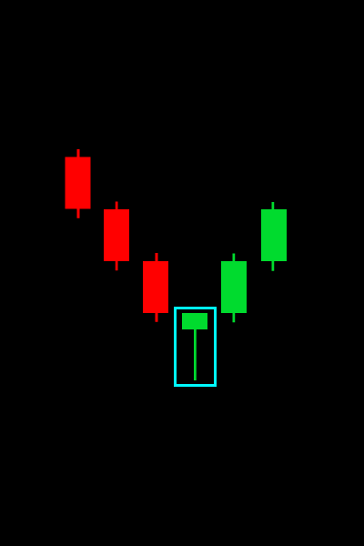
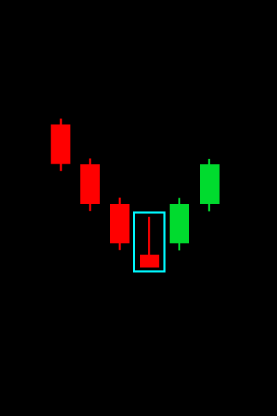
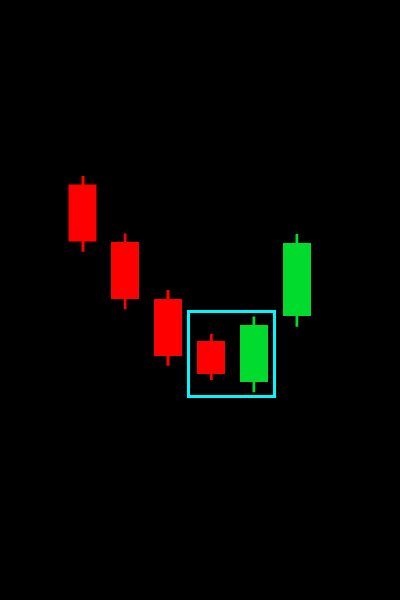

Молот
Когда у свечи есть огромная тень от падения и по завершении формируется
свеча похожая на молот. Это указывает на превосходство силы покупателей
и последующий сильный рост

Перевёрнутый Молот
Когда у свечи есть огромная тень от роста, но по закрытию, свеча становится
красной и похожей на перевёрнутый молот. Это указывает на превосходство силы покупателей
и последующий сильный рост

Бычье Поглощение
Когда одна свеча закрывается на падении, а следущая свеча закрывается при росте, при этом
перекрывая предыдущую, как бы её поглощая. Это указывае на последующий рост